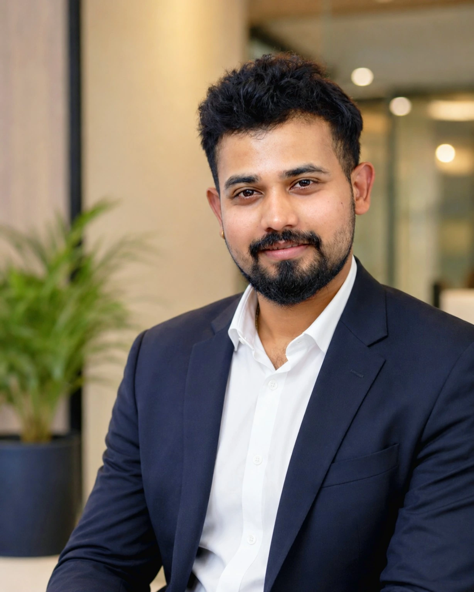

Enterprise Networking
Huawei • Aruba • FortiGate • VLANs • Routing • Migration • Core & Access • HA
Network · Infrastructure · ELV · CCTV · Linux · Docker · AI Automation
Discover. Design. Validate. Deploy. Deliver.
I am Amal Dileep, a UAE-based Lead System Engineer working across networking, IT infrastructure, ELV, AV, CCTV, data center systems and emerging automation technologies.
My role extends beyond installation and configuration. I work throughout the project lifecycle — understanding customer requirements, conducting technical assessments, designing solutions, preparing BOQs and technical proposals, supporting presales, coordinating vendors, implementing systems, troubleshooting complex issues and delivering completed projects.
I have been involved in 100+ sites and technical engagements, ranging from enterprise networking and Wi-Fi deployments to surveillance infrastructure, fiber networks, server systems and automation projects.
I combine traditional infrastructure engineering with Linux, Docker, Raspberry Pi, automation and AI technologies to build smarter and more efficient systems.

From the physical layer and switching fabric to systems, security, automation and operational handover.
Huawei • Aruba • FortiGate • VLANs • Routing • Migration • Core & Access • HA
Huawei AirEngine • Aruba • Ruckus • Controllers • RF Planning • High-Density Wi-Fi
Servers • Storage • Racks • UPS • Structured Cabling • Fiber • Migration
IP CCTV • ANPR • NVR • VMS • Digifort • Dahua • Hikvision • ELV Integration
Linux • Red Hat • Docker • Compose • Systemd • Reverse Proxy • Raspberry Pi
n8n • Bots • TTS • WebSockets • APIs • Local AI • Voice Interfaces
Understand client requirements and site conditions.
Develop architecture, BOQ, technical proposal and implementation strategy.
Coordinate OEMs, vendors and technical teams.
Install, configure, integrate and troubleshoot systems.
Testing, commissioning, documentation and project handover.
Client-sensitive identities are intentionally generalized. No credentials, private IP addressing, pricing or confidential diagrams are exposed.
CCTV • Networking • Storage • Data Center
Enterprise surveillance modernization design involving approximately 54 IP cameras, centralized video management, failover architecture and long-term storage planning.
Enterprise Wi-Fi • Networking
Designed and supported a high-density wireless solution for a large warehouse and office environment with challenging rack geometry and RF conditions.
IoT • Automation • Tracking
Designed a BLE-based vehicle movement tracking concept across an automotive workshop with operational and customer notification workflows.
Networking • Data Center
Planned migration and replacement of more than 25 enterprise Huawei switches across core and access infrastructure.
Fiber • Network Infrastructure
Designed an infrastructure concept and BOQ for approximately 30 villas, around 100 network/service points, 30 network racks and a centralized core network.
CCTV • ANPR
Delivered an ANPR implementation covering camera installation, network/IP configuration, loop integration, NVR integration and functional testing.
Network Architecture
Worked with segmented enterprise networks using FortiGate firewall infrastructure across administrative, guest, CCTV, voice, storage and service domains.
AI • Linux • Docker • 3D • Automation
Personal AI assistant experiment combining browser voice interaction, neural text-to-speech and a real-time animated VRM avatar on self-hosted infrastructure.
Automation • Docker • AI
Created and managed a self-hosted n8n automation environment on Raspberry Pi for bots, webhooks, API orchestration and AI workflow experiments.
Home Lab • Linux • Docker
Built a Raspberry Pi 5-based personal infrastructure lab for Linux, containers, storage, remote access, automation and AI experimentation.
Embedded Systems • IoT • R&D
Experimental embedded development and NFC testing on an ESP32-S3 wearable platform, positioned as a learning and R&D environment rather than production deployment.
AV • Digital Signage
Experience supporting interactive kiosks, non-interactive kiosks, wall-mounted displays, digital signage infrastructure and related network/hardware coordination.
A self-hosted AI voice assistant and real-time VRM avatar experiment combining Linux, Docker, TTS, WebSockets and browser-based 3D rendering.
Explore Aryvik ↗I regularly work with customers, internal sales teams, OEMs and distributors to convert business requirements into technical solutions.
Delivery means making the approved design work in the real environment — coordinating teams, solving field issues and completing handover.
I enjoy understanding how systems work from the physical layer upward — cabling, switching, routing, wireless, servers, applications and automation.
My personal technology lab is where I experiment with artificial intelligence, local AI assistants, voice systems, 3D avatars, Raspberry Pi, Docker, automation, IoT, NFC, Linux and self-hosted infrastructure.
amal@infra:~$ fortune
amal@infra:~$
The gallery uses only public-safe media currently available in the portfolio. Additional real project-site photography can be added later without changing the layout.
Technology familiarity is shown separately from certification status.
Spectra IT Infrastructure LLC, Dubai
Networking, infrastructure, ELV, AV, CCTV/VMS, presales and project delivery.SP Corporation Car Parking Management LLC, Dubai
Parking systems, ANPR/CCTV, kiosks, troubleshooting and commissioning.KTC International LLC, Dubai
Electronics, field systems, installation, maintenance, testing and technical site support.RHCSA training completed. Certification preparation is in progress.
Continuing networking certification development and Huawei networking learning.
Linux, Docker, Git, automation and CI/CD concepts.
Self-hosted AI, TTS, automation and 3D avatar experiments.
Training and technologies are not presented as certifications unless explicitly earned.
Whether the challenge involves enterprise networking, infrastructure, wireless, ELV, surveillance, automation or emerging technology, I enjoy turning technical requirements into systems that work.